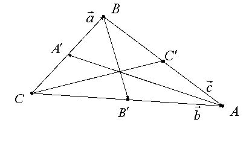
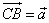
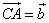
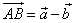
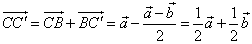
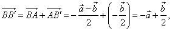
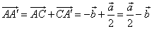
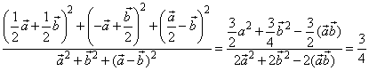
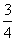

П 4.5 №21
Покажите, что сумма квадратов медиан треугольника относится к сумме квадратов его сторон, как 3:4.
РЕШЕНИЕ:

Пусть , . Тогда . Находим медианы треугольника:
,

.
Осталось найти требуемое отношение:

Ответ:.